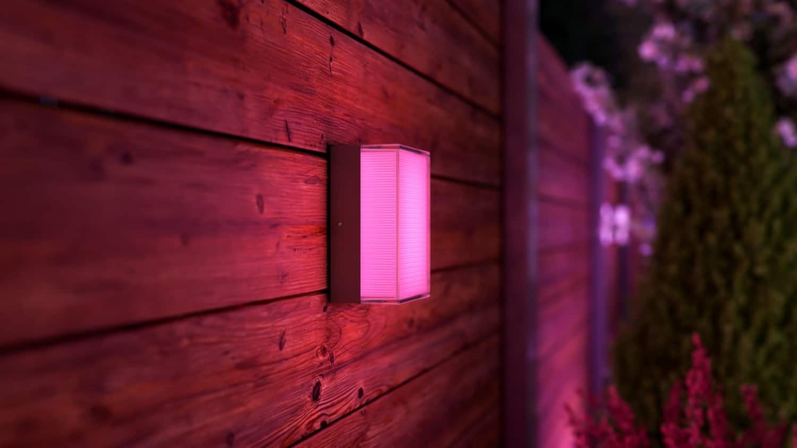
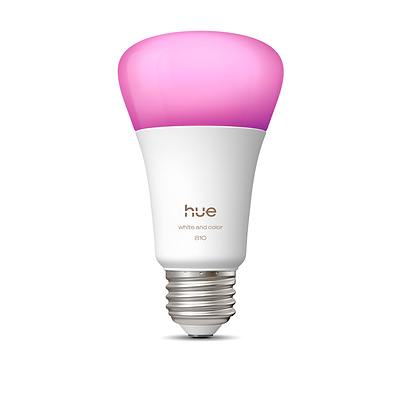

Philips Hue: all new lights ship Matter over Thread

Hueblog confirmed Sep 9 what the IFA floor implied: every new Philips Hue light, bulb, and light strip supports Matter over Thread, including the Hue × Nanoleaf wall-light controller. Direct Matter pairing is real for simple lamps and outdoor sconces; gradient products still need the Hue app for full color features because Matter does not yet carry gradients.

That sits on top of Signify’s June concurrent multiprotocol plan with Silicon Labs: select MG26 / SiMG301 bulbs will eventually run Zigbee and Matter over Thread at once via a later software update. Today, commission-time choice still applies on those chips. Hue Secure battery camera quietly moved to 2K; Apple Home camera support is still “working on it,” with no date.
Practical takeaway for a local stack: Bridge + Hue app remains the full-feature path; Matter-over-Thread is the interoperability on-ramp for non-gradient fixtures.
- Primary source
- Hueblog, 9 Sep 2026; Silicon Labs / Signify CMP announcement